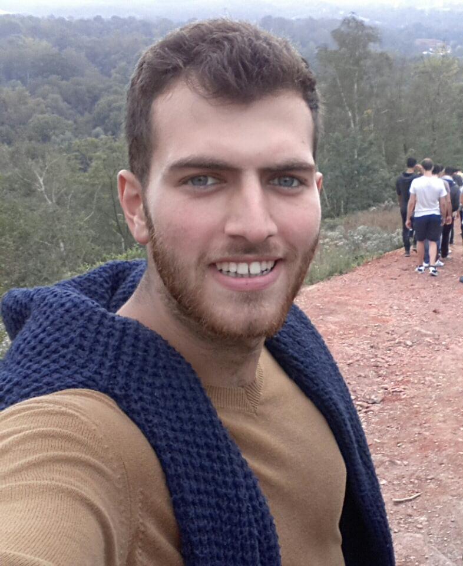

Hello.My name is Tutku Ayavefe.I was born in Istanbul which is most crowded city in our country,Turkey.I lived in Istanbul about 1.5 years and after my father took his designation to Hatay.Firstly, we lived in Samandag which is district of Hatay.Also we lived in Samandag 4 years and after we moved from there to Antakya.It is a center of Hatay also it is a district like Samandag. So when I came to 7 years old, I started primary school.It's name was Mustafa Kemal Akbay primary school. It was very close to my home so I could go with walk in 10 minutes. It was very cool because lots of my friends were coming to my school the other village or district. I was educated there when I became 15.After I got a chance with "YGS" to enter Huseyın Ozbugday Anatolian High School . After 4 years I graduated and I deserve to study in Anadolu University department of Computer Science.First year I was in YDYO beacuse my department's education is English. When I finished my education in YDYO, I was 19 years old. And now I am 22.And it is my fourth year in Eskisehir. I love this city. If you get a chance for visitting to Eskisehir, you should see this lovely city.